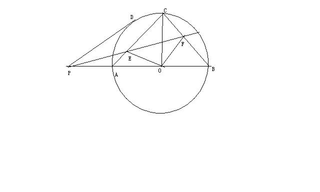

我在本质之外游荡吗？
2013/6/24

晚上整理书籍时抽出彭老发的数竞试卷，拿到平几的题就做，C是弧中点，PD是圆的切线，PF为角平分线，证明EO垂直FO，5min的平几思考无果（要证四点共圆，倒角吗？用比例吗？），如风在放弃和借解几之间徘徊，好长时间没接触了，不会很正常，这是一种声音；解几应该可以的，切线问题和二次曲线自己都深入过，尽管都针对圆锥曲线，这又是一种声音。
站在起点，结果的事谁能预料呢？
解几的思路如风先想到了设角DPB为m，半径为r，建系选O点，PF方程一写，CA与CB二次曲线方程写出：
（y-r+x）(y-r-x)=0,联立直线PF与二次曲线方程构造y比x，用韦达定理找c比a，用三角代换一化简得-1.
如风想，O是原点而且EO垂直FO绝不是新鲜的结论，早在椭圆时我们就记过x方+y方=r方，其中a方、r方、b方，各自的倒数成等差，这个圆的任意切线交椭圆于EF两点，都有OE垂直OF，只是课内的方法是设y=kx+b式的保守，而不是设Ax+By+C=0，x方比a方+y方比b方=1=[（Ax+By）比C]方，一展开，同除以x方，令韦达中的c比a为-1，结合原点到该含ABC三个参数的直线距离公式导出这个距离是定值，翻来覆去就是这种运算而已。
诚然椭圆换成了两条直线组成的二次曲线，又有二倍角的搀和，但于解几的思想并无创造性，能运用好既有的东西，也令如风感到一丝满足。
然后如风仍想向平几方法要答案，莫非设变量解△？如风发现△CFO与△EAO在结论成立的条件下全等，那么改证EO=FO怎么样呢？FO放到△FPO中，那么角PFO，应该=角ACO=45°=角PDO的一半！于是问题化归到一个初中的几何证明，拿去多余的线段和圆，不过是——
不对啊？半角关系应该能秒杀的啊？是不是还需要FO平分角DOB的条件，那么F不成了RT△的旁心了吗？那么E就是内心？可这都是待证明的啊？
平几就此止步了，不在天资而是疏忽了每一个平常，如风曾能忘记九年级赴武汉考试，天天有五心考题，而自己比competitor差一大截，那时的自己对它们的掌握和现在相比，很惭愧的说，并没有质的突破，尽管知识点上多了点但仅仅是知道是什么而已，而从初三到如今在平几钻研中常有乱冲乱撞，有时不得不借力三角的计算。 也许唯一一次用纯平几冲出来的几何题，曾在北京培训班上讲给了同学，坦诚“试探着往前走，结果超出了自己的期望”，但随即一位小巧玲珑的女生给出了纯倒角的证法，远胜过我的2次相似+比例整合，在颇有倾慕地为她鼓掌时，如风觉得自己强于计算弱于推理的特点似乎是一个需要接受的事实。
给一种较模式化的方法，如风有时能巧用破题，但走纯几何总是走不出关键性的几步，不自觉地设参量用计算，比如本题，如风想证EO平分角DOP，尽管重置了字母，通过AO（DO）比PO=sin某角 又=△面积比，借正弦定理确实能算
但这不是一个擅长三角计算的如风希望走的路，没有思维含量。
也许如风并不需要过多感叹鲁南书城为什么只有科普和应考没有科学，买过的哪一本书不是因艰深而弃之一旁了吗？不是教人考试的书少了不负责任的功利心，但对于只收过考试训练未受过专业训练的如风而言……
不觉中来到各国语言区，一本法语零起点，音标都有点怪；一大本法汉词典，对基本虚词的解释超过目前的承受能力。不过如风还想请教冬瑜姐姐，国际音标是适用于各种语言，还是每种语言都有一套注音，就像拼音一样？ 好吧，我还是继续看《看见》吧，一步有温度没有文字障碍的书，它离生活很远吗？小姐、同性恋、夫暴而妻弑夫……它离生活很近吗？李阳也被小柴采访过啊，家暴后有难以言说的故事。
也许最亲近的人不是相处时间较长的，就像李阳和台下的学生一样，时间短暂但令彼此都很“疯狂”。 书店，一定程度上似网络，如风亲自感受后得出结论，找什么，无果，干着急；乱走动，没定力，鲜有收获……